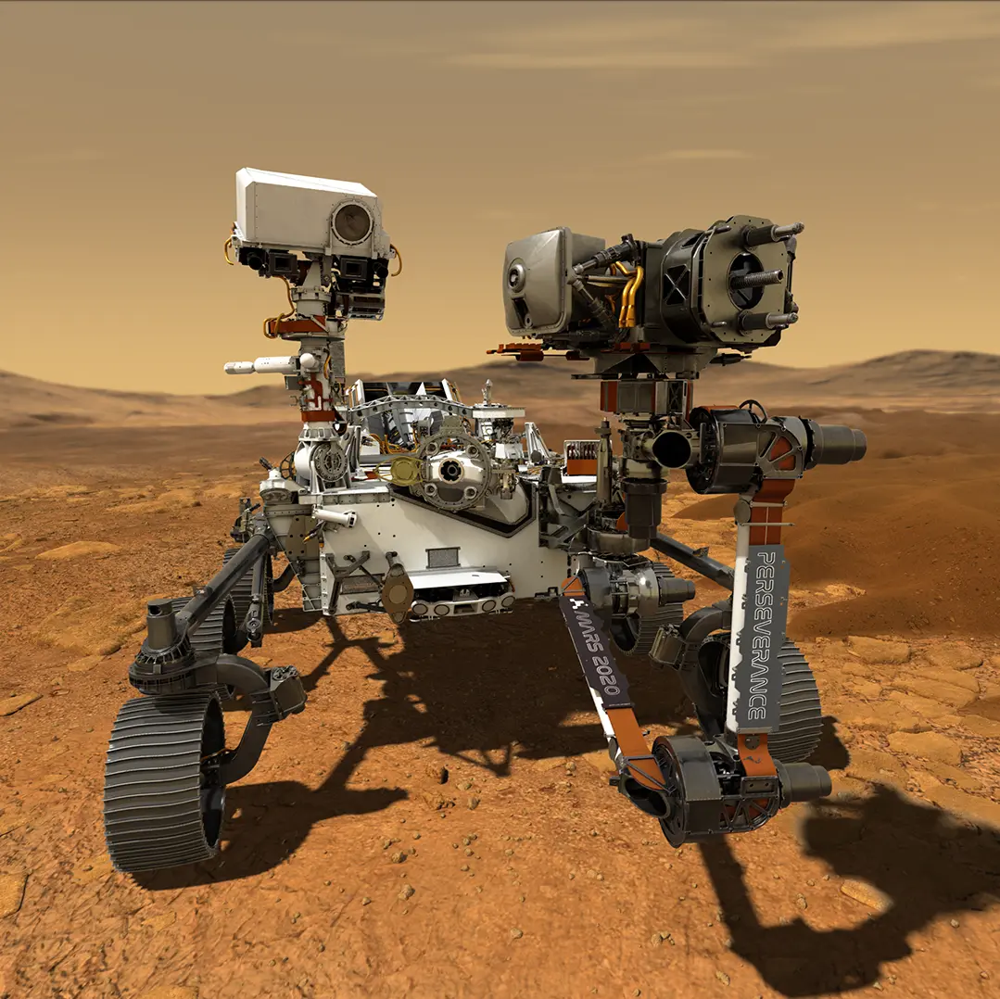

Source: NASA.
Perseverance
Perseverance
The most recent rover to be sent to Mars from NASA is called Perseverance. It was called Perseverance after a naming contest that included schools across the US, with children suggesting names for the rover.
It began its journey to Mars on and landed on Mars after about in transit in Space on . Not only was Perseverance sent to Mars, but also a small robotic helicopter called Ingenuity. The objective of the rover and helicopter are to investigate whether there are signs of habitable conditions in Mars' past.
Audio Recordings
The Perseverance rover has two microphones on it, and is the first rover to have recorded sound from another planet. As a result of the different atmosphere on Mars (composed of a lot more carbon dioxide), some sounds seem distorted.
A clip of the wind on Mars. Rover sounds were removed from the recording by NASA engineers. Wind can be heard towards the end of the recording.
The clip contains the first recorded audio from another planet. It is the raw audio recorded after landing on Mars. The main sound that can be heard is that of the rover, but this allowed engineers to understand how sound dissipates in a different atmosphere.
Mars Samples
The Perseverance rover is continously collecting and storing samples that will, in the future, be collected by a seperate ship and brought back to Earth. These samples will undergo a deep analysis by the NASA scientists and will contribute enormously to the global effort to understand the history of the Red Planet.[2]
References
- National Aeronautics and Space Administration. Sounds of Mars [Online]. 2021. [Accessed 3 March 2022]. Available from: https://mars.nasa.gov/mars2020/participate/sounds/
- National Aeronautics and Space Administration. NASA, ULA Launch Mars 2020 Perseverance Rover Mission to Red Planet [Online]. 2020. [Accessed 3 March 2022]. Available from: https://mars.nasa.gov/news/8724/nasa-ula-launch-mars-2020-perseverance-rover-mission-to-red-planet/